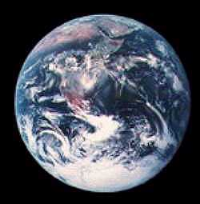

| Improbably Blessed, You are Here  and until we started growing Big Bodies, She was Glad. |
Lovely, isn't She? And alive. Yet we know up close that She's wounded pretty badly now. Lesions, cankers & toxic boils erupt as vast new organisms rip blindly at Her fragrant flesh. Her scars of late are glibly blamed on the scourge of "human nature," but 10 million Native Americans lived in our land for 10,000 years, yet left it so pure that early explorers saw only "a paradise vision of untouched teeming wilderness." It took organization to foul the soil, rape the seas, turn the rains to acid. |